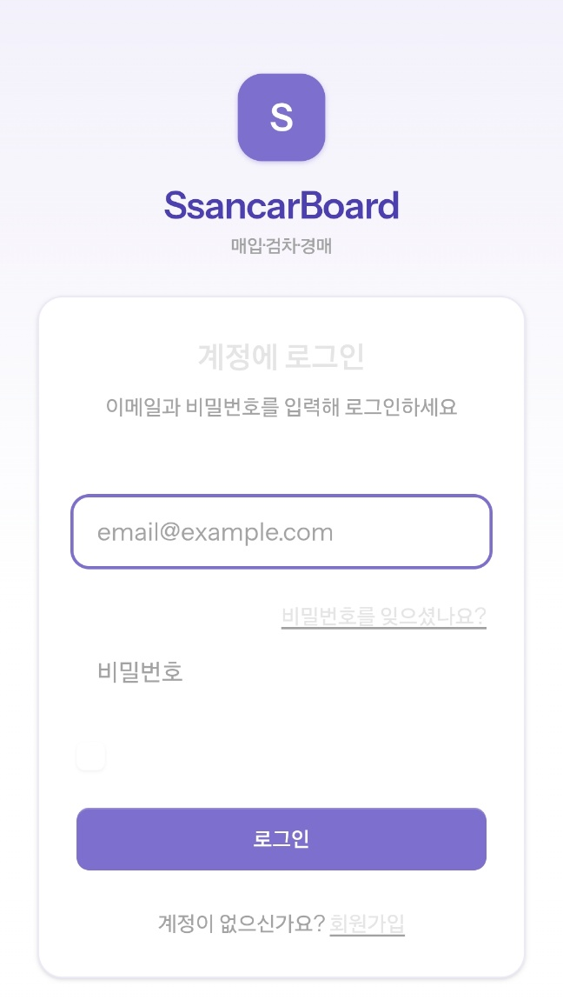
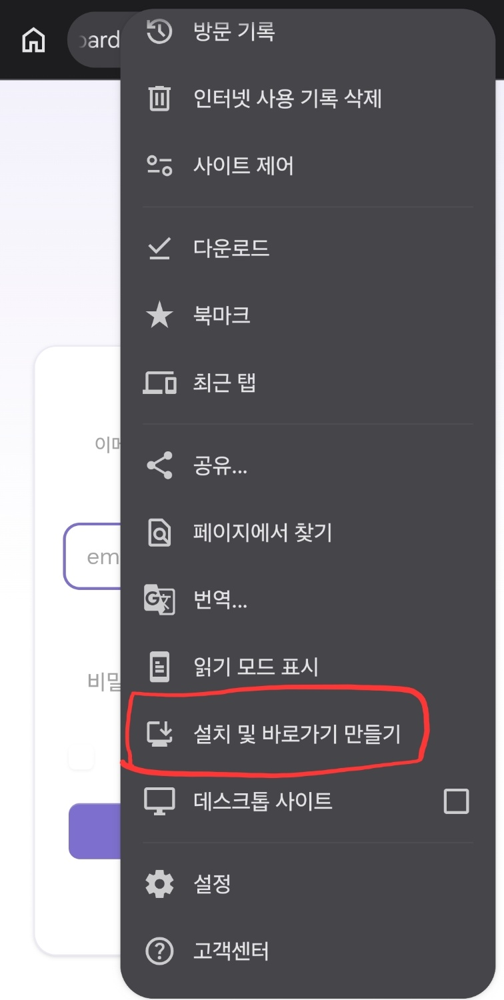
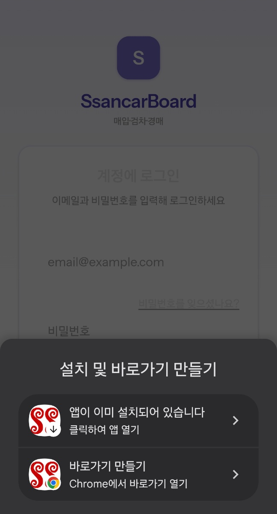
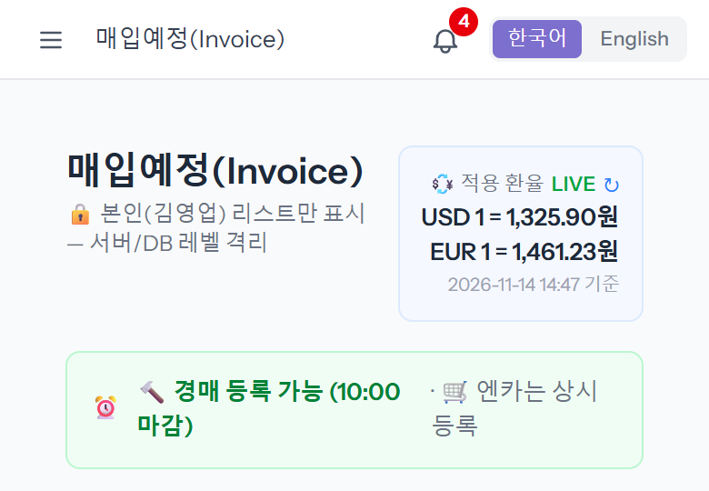
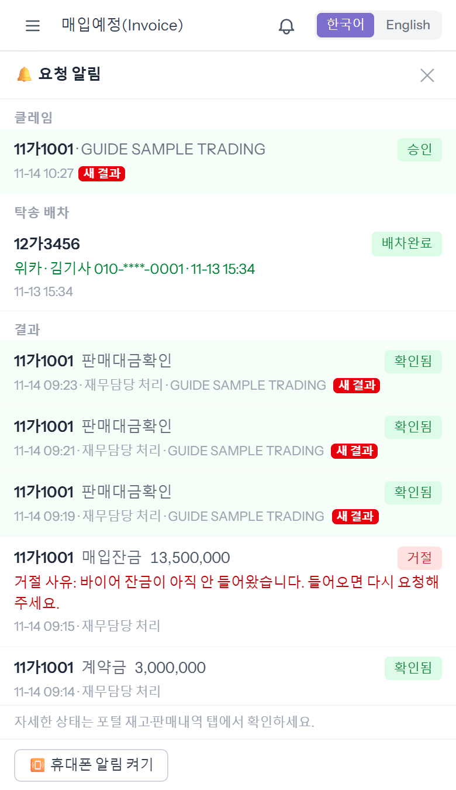
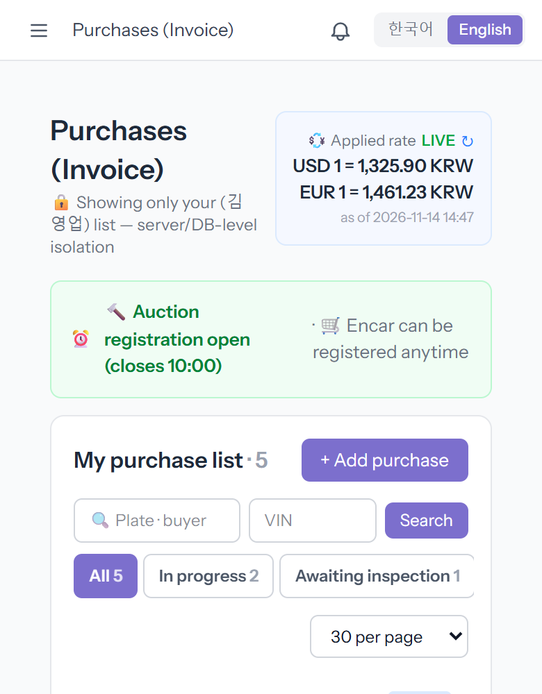
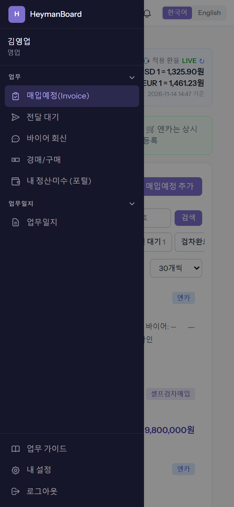
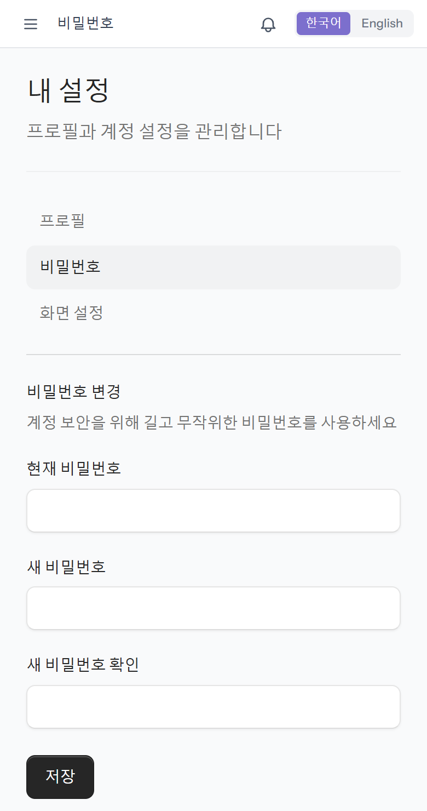

board 를 처음 쓰는 날 한 번만 하면 되는 것들입니다. 로그인 → 휴대폰 홈 화면에 앱 추가 → 휴대폰 알림 켜기 → 언어 고르기. 계정(이메일·처음 비밀번호)은 관리가 「사용자 관리」에서 만들어 알려 줍니다.
회사마다 주소가 다릅니다. 받은 주소를 그대로 엽니다. 처음 비밀번호는 로그인한 뒤 바로 바꿉니다(7단계). 비밀번호를 잊으면 관리에게 새로 정해 달라고 합니다.

홈 화면에 회사 아이콘이 생기고, 누르면 주소창 없이 앱처럼 열립니다. 앱 스토어에서 받는 것이 아니라 설치가 따로 필요 없습니다.

처음이면 설치 항목을 누릅니다. 이 사진은 이미 설치한 폰이라 「앱이 이미 설치되어 있습니다」로 나옵니다. 「바로가기 만들기」는 크롬 안에서 열리는 아이콘이라 앱처럼 쓰려면 설치 쪽이 낫습니다.
아이폰도 비슷합니다. 사파리에서 열고 아래 공유 버튼(네모에 위 화살표) → 「홈 화면에 추가」. 아이폰은 이렇게 추가한 앱에서만 휴대폰 알림(4단계)이 됩니다.

종 숫자는 아직 안 본 새 결과 건수입니다. 패널에는 계약금·잔금 요청을 ERP 가 확인하거나 거절한 결과, 클레임 결과, 탁송 배차, 긴급 검차 결정 등이 모입니다. 거절은 사유가 빨간 글씨로 나옵니다.
[휴대폰 알림 켜기]를 누르고 브라우저가 묻는 창에서 허용하면, 화면이 꺼져 있어도 결과가 오면 폰이 울립니다. 폰마다 한 번씩 켭니다(새 폰이면 다시). 종은 영업·관리에게 보입니다.


예전에 「차단」을 누른 것입니다. 크롬 주소창 왼쪽(또는 앱 설정) → 사이트 설정 → 알림 → 허용으로 바꾼 뒤 다시 [휴대폰 알림 켜기]를 누릅니다.
누르면 메뉴·버튼·안내가 그 언어로 바뀝니다. 영어 화면에서는 차량번호가 로마자로 보이지만(예: 11GA1004) 보이는 모양만 바뀌고 저장된 값은 그대로입니다. 사람이 적은 메모·사유는 적은 말 그대로 나옵니다.

메뉴에는 내 역할에 맞는 화면만 나옵니다. 맨 아래에 「업무 가이드」(지금 이 화면)·「내 설정」·「로그아웃」이 있습니다. 「내 설정」 → 「비밀번호」에서 현재 비밀번호와 새 비밀번호를 넣고 [저장].

